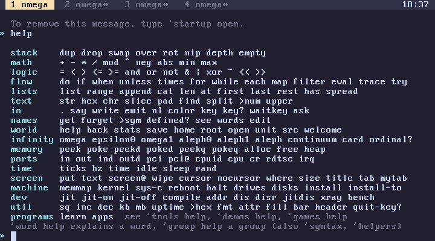
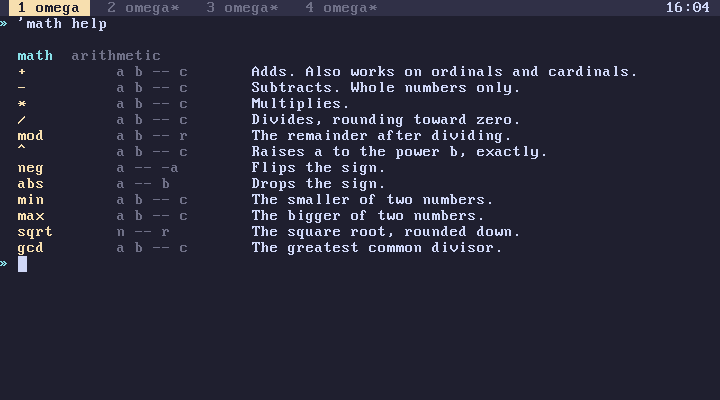
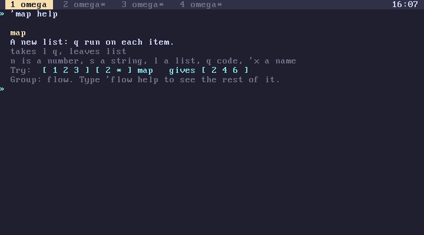
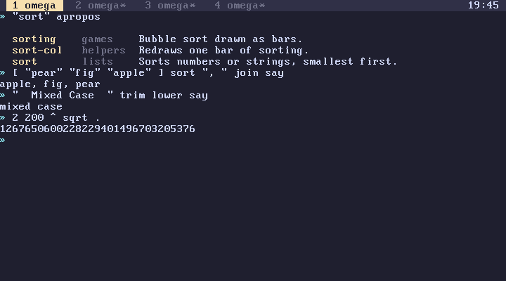

subverge
subvergeHelp
- The three forms
- A group
- A word
- Reading stack effects
- Words without an entry
- apropos
- The pages
- Other ways to look things up
help is the manual built into Subverge. Every built-in word and every word defined in root has an entry, and the entries are grouped by topic. The entries are compiled into the kernel, so they always match the version you are running, and they work on the live ISO with nothing else installed.
The three forms
help lists the groups
'math help lists the words in a group
'map help shows one word
help looks at the top of the stack. If it holds a symbol, help takes it and shows the group or word of that name. Anything else is left alone and the overview is printed.
map help without the quote runs map first, which fails because it has nothing to map over. 'map pushes the name instead of running it (names).

A group
A group page lists each word with its stack effect and a one-line description:

The groups are:
| Group | Contents |
|---|---|
syntax |
brackets, :name, ->name, { }, 'name, strings and comments |
stack |
moving values around |
math |
arithmetic |
logic |
comparisons and bit operations |
flow |
choices and loops |
lists |
lists, which are also quotes |
text |
strings |
io |
printing and keys |
names |
definitions |
world |
history, saving, root, apropos |
infinity |
ordinals and cardinals |
memory |
raw memory |
ports |
ports, the CPU and PCI |
time |
clocks and counters |
screen |
drawing on the screen |
machine |
hardware and drives |
dev |
the JIT and the disassembler |
tools |
ready-made utilities |
demos |
math demos |
games |
games and toys |
util |
small helpers |
helpers |
words the utilities use inside |
A word
A word page shows the description, the stack effect spelled out, an example and the group it belongs to:

Reading stack effects
Stack effects are written as what the word takes, then --, then what it leaves, with the top of the stack on the right:
dup a -- a a
swap a b -- b a
at l i -- x
pad s n -- str
The letters follow a loose convention: n and i are numbers, s and str strings, l a list, q code to run, 'x a name, and a, b and x any value. A word page spells the effect out, as in takes l i, leaves x, followed by a reminder of the convention.
Words without an entry
Words you define yourself have no entry. help recognises them and says so:
[ dup * ] :sq2
'sq2 help
sq2 is yours. Type 'sq2 see to read it.
For a name that is defined nowhere, help fails with there is no help for foo. see prints your own definitions, and comments in a root unit stay in its source, where 'name open shows them.
apropos
"string" apropos
searches the name and the description of every entry, ignoring case, and lists the matches with their groups:

The search is a plain substring match, so "sort" apropos finds sort, sorting and sort-col, and a short search such as "a" matches nearly everything.
The pages
docs opens the index of the help pages and "name" doc opens one by name, for example "first-steps" doc. Every word in the index of words has a page, and text links in a page open the page of a word. Up, Down, PgUp, PgDn, Home and End scroll, Space pages down, Tab selects the next link and Enter follows it. Backspace goes back and q or Esc leaves. Enter on a line of code closes the viewer and runs the line at the prompt. With a mouse, a click follows a link or runs a code line, the wheel scrolls and a right click goes back.


Other ways to look things up
wordslists the definitions in your tab, with their values.'name seeprints a definition, marked(root)if it comes from root.rootlists the units of root and the words each one defines.appslists the programs (apps).- learn teaches the language from the beginning, one screen at a time.
The website has the same entries as tables in all words, and words introduces the everyday ones.